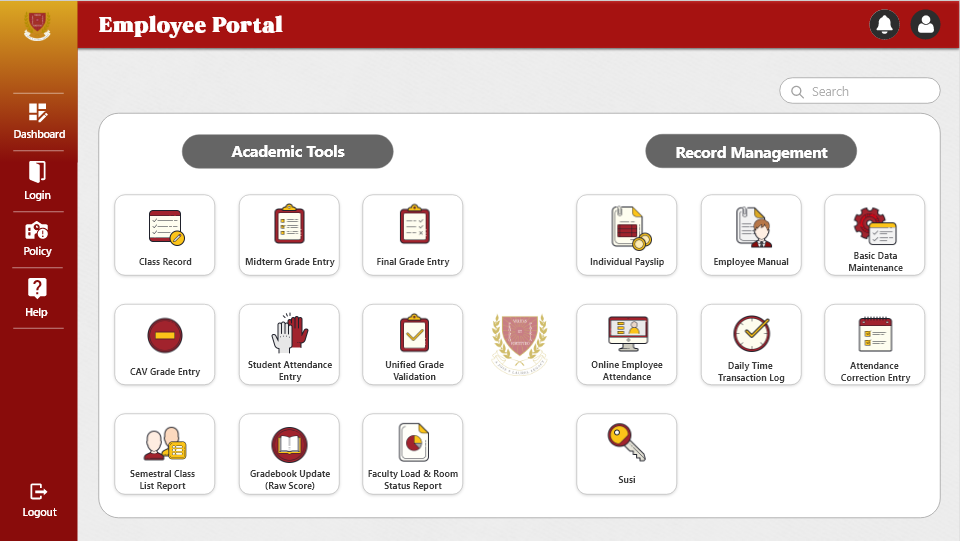
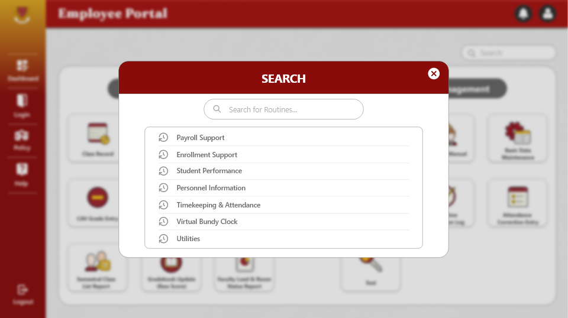
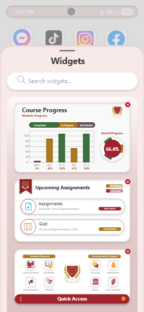

ACADEMIC ACTIVITY · MAY 3, 2025
Employee Portal
& Widget.
Another Adobe XD prototyping exercise: a redesign of the LPU-B employee portal, paired with a home-screen widget concept so students can track progress and keep up with upcoming deadlines at a glance.
01 — OVERVIEW
A portal redesign, plus a quick-access widget.
This activity had two parts: redesigning the LPU-B employee portal in Adobe XD, and designing a phone widget that gives students quick access to their portal — so they can track progress and avoid missing deadlines without opening the full app.
02 — PORTAL SCREENS



03 — STUDENT WIDGET CONCEPT

04 — BEFORE → AFTER
Two screens, side by side.
Only two of the redesigned screens still have a surviving “before” copy of the original portal — shown here alongside the redesign.
Original portal → redesigned screen.
01Portal screen
02Portal screen